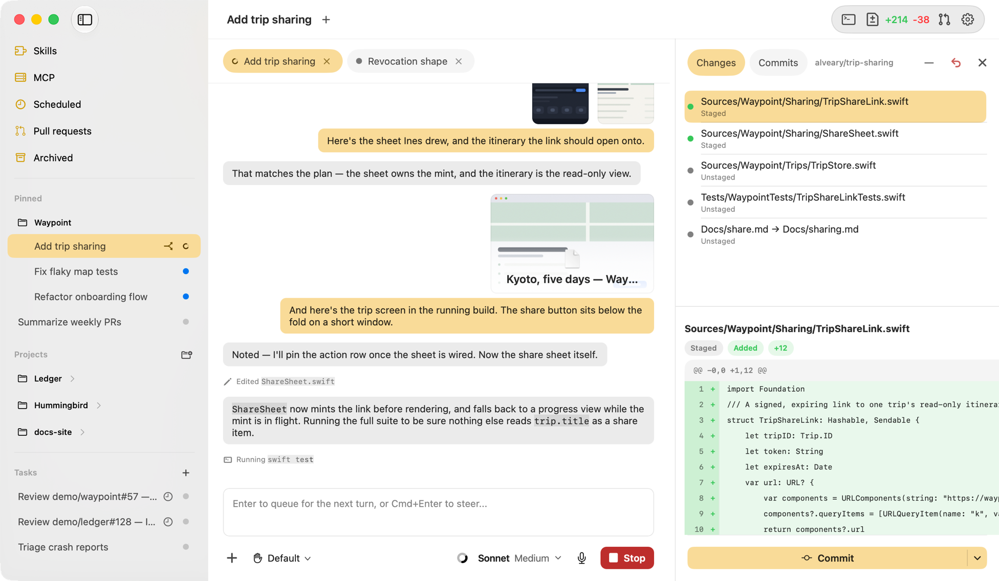
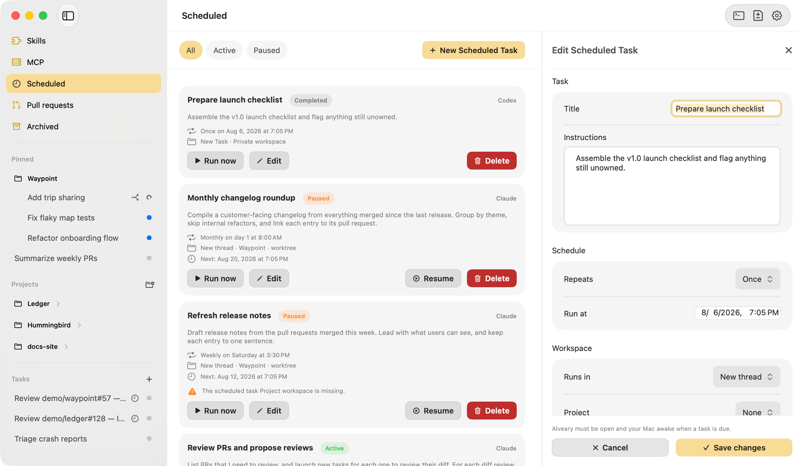
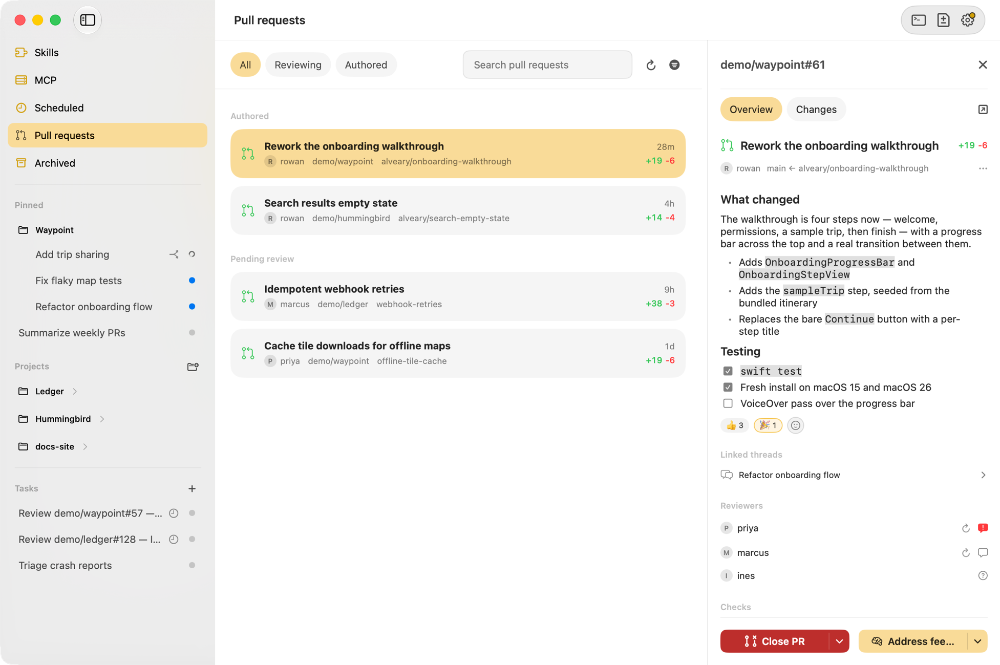

Alveary
Run Claude Code, Codex, and other AI coding agents (soon) from one native macOS workspace — with an embedded terminal, voice input, and deep Git integration.

Run Claude Code, Codex, and other AI coding agents (soon) from one native macOS workspace — with an embedded terminal, voice input, and deep Git integration.

Run agents on a schedule — daily briefs, periodic pull request reviews, or any recurring work you'd rather not kick off by hand.

Open and manage your own pull requests, and review your teammates' — by hand or with an agent — all without leaving the app.
